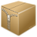

IPv6
Das Internet Protokoll Version 6 (IPv6) wird das zukünftige Kommunikationsprotokoll für Netzwerkgeräte, wie Rechner, mobile Geräte, Router und dergleichen, sein. Es löst damit das bisherige Internet Protokoll Version 4 (IPv4) ab, das aufgrund der stärker beschränkten Anzahl an möglichen IP-Adressen an seine Grenzen stößt. IPv6 weist einige Unterschiede in der Handhabung auf, es werden andere Werkzeuge und eventuell neue Hilfsmittel benötigt.
Diese Übersichtsseite sammelt alle Seiten im Wiki, die zu IPv6 erstellt wurden.
| Artikelserie IPv6 | |
 Grundlagen | Eine Übersicht mit Historie und den wichtigsten Grundlagen (Adressaufbau, Adresszuweisung)
|
|  Privacy Extensions | Zur Erzeugung von zeitlich begrenzt genutzten IPv6-Adressen, um die Verfolgbarkeit des Rechners im Internet zu erschweren. |
 Miredo | Dieser Dienst ermöglicht Zugriff auf IPv6, wenn dies vom eigenen Internetprovider und/oder Netzwerk nicht unterstützt wird. |
AICCU | Dieser Dienst stellt eine IPv6-Adresse zur Verfügung, wenn diese ansonsten nicht im eigenen Netzwerk vergeben werden kann. |


- Erstellt mit Inyoka
-
 2004 – 2017 ubuntuusers.de • Einige Rechte vorbehalten
2004 – 2017 ubuntuusers.de • Einige Rechte vorbehalten
Lizenz • Kontakt • Datenschutz • Impressum • Serverstatus -
Serverhousing gespendet von